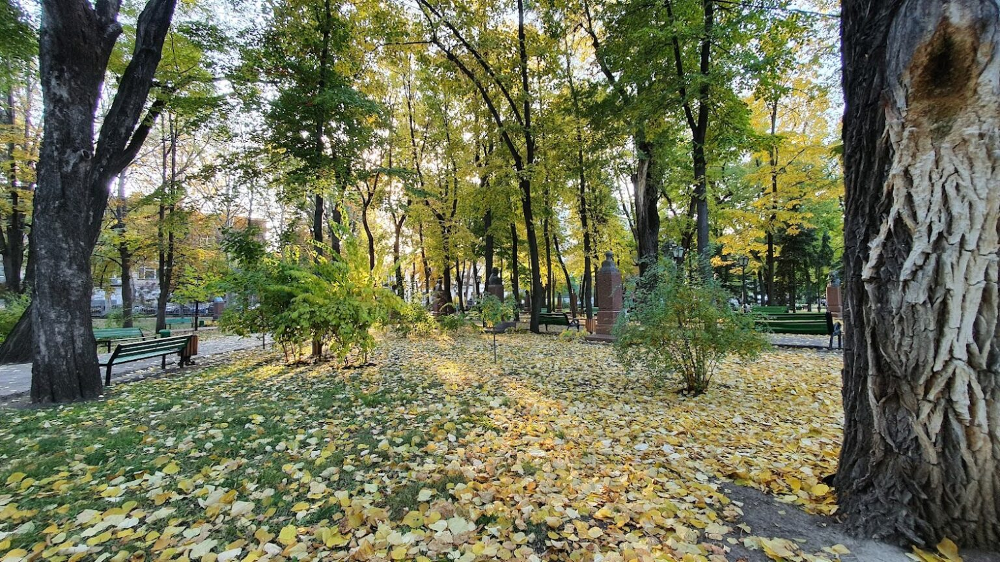
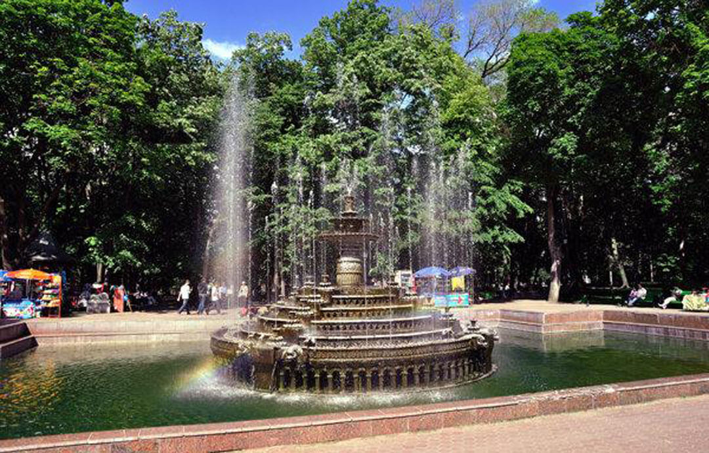
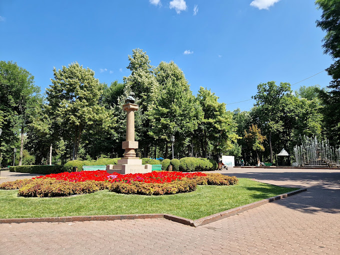
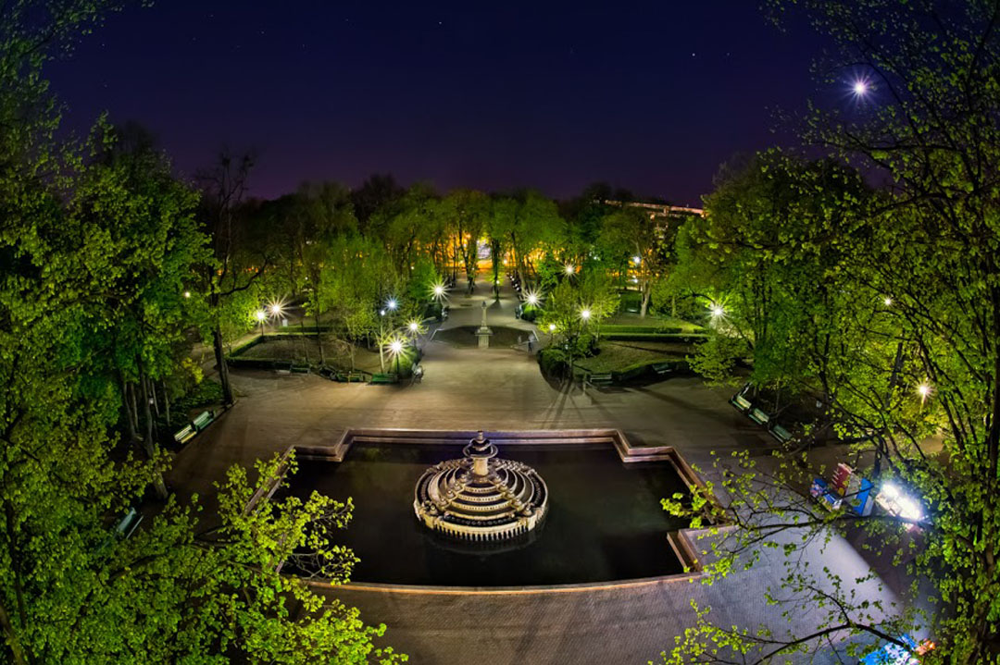
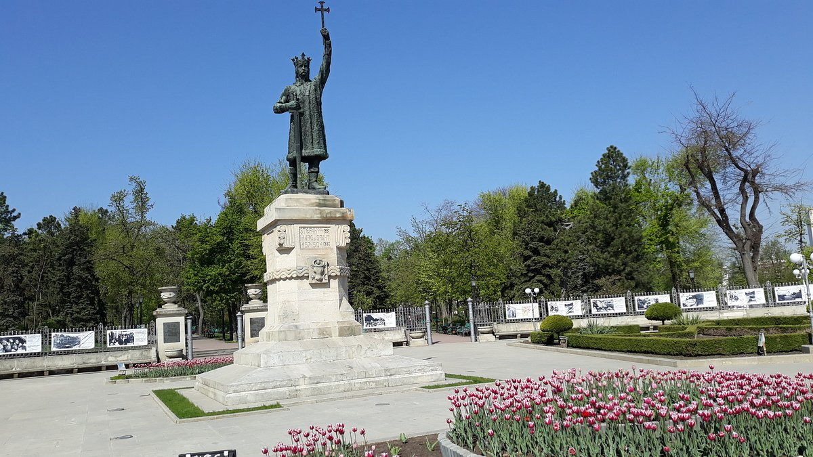

Grădina Publică „Ștefan cel Mare” și Sfînt
Descoperă cel mai vechi parc din Chișinău, o bijuterie a patrimoniului cultural al orașului.
Cu o istorie bogată, acest parc a fost plantat în 1818 și a purtat de-a lungul mai multe denumiri, inclusiv Grădina Alexandru, Parcul Aleksandr Pușkin și Grădina Publică Orășenească.
Actuala denumire, Parcul Central, a fost adoptată în anii '90, în urma independenței Republicii Moldova.
 Parcul dispune de 7 intrări și găzduiește aproximativ 50 de specii de arbuști și arbori, unii cu o vechime de aproape 200 de ani, precum impresionantul salcâm gigant.
În trecut, parcul a fost înzestrat cu piscine, monumente, sculpturi, o cafenea pentru copii și tabla de onoare a orașului. Din cele 4 havuzuri inițiale, doar unul central rămâne în funcțiune în prezent.
 Istoricul parcului
A fost plănuit pentru prima dată în anii 1816-1817 de către arhitectul și inginerul cadastral al Basarabiei, Ozmidov.
Lucrările majore au început în 1825, sub îndrumarea inginerului cadastral Bogdan Eitner, care a conturat aleile și a plantat numeroși arbori și arbuști, inclusiv impresionantul număr de 1.000 de salcâmi.
Forma sa actuală, cea de Grădină Publică, a primit-o în 1835.
Pe parcursul anilor, au fost adăugate intrări, două fântâni arteziene cu o adâncime de 13 metri, pavilioane de recreație, scrâncioburi și două orologii. Parcul inițial impunea un tarif de intrare.
În perioada 1863, a fost înconjurat de un gard de nuiele, care ulterior a fost înlocuit cu unul de lemn, apoi cu un zid de piatră, la decizia Primăriei, și, în cele din urmă, cu un impresionant gard de fontă, un proiect semnat de Alexander Bernardazzi.
Monumentul lui Ștefan cel Mare și Sfânt
Monumentul lui Ștefan cel Mare, o emblemă istorică deosebită, a fost creat în 1927 la turnătoria Rîșcanu din București. Materialul folosit provine de la 6 tunuri otomane capturate în timpul războiului de independență din anii 1877-1878.
Dezvelit în Chișinău în 1928, cu ocazia celei de-a zecea aniversări a unirii Basarabiei cu România, această statuie, înaltă de 5,20 metri, a fost plasată pe un soclu din piatră extrasa din cariera de la Cosăuți.
Proiectul soclului a fost realizat de Eugen Bernardazzi, fiul lui Alexandru Bernardazzi, celebrul arhitect al orașului Chișinău, și inginerul G.A. Levițchi.
În anul 1940, după ultimatumul sovietic dat României, statuia a fost transferată la Vaslui, iar soclul a fost demolat în Chișinău.
În 1942, statuia a revenit în oraș, fiind plasată în fața Arcului de Triumf. Totuși, în 1944, a fost evacuată din nou și transportată la Craiova.

În 1945, Claudia Cobizeva, o discipolă a lui A. Plămădeală, a văzut întâmplător monumentul lui Ștefan cel Mare într-un parc din Craiova și a alertat autoritățile sovietice. Astfel, statuia s-a întors la Chișinău ca un bun cultural scos din URSS.
În 1971, s-a hotărât restaurarea și instalarea unui nou postament, iar în 1990, statuia a fost reamplasată la Grădina Publică. Noul soclu a fost realizat din piatră de Cosăuți sub îndrumarea lui Eugen Bernardazzi.
Inscripțiile inițiale au fost restabilite în întregime, marcând revenirea statuii la locul său de origine.

Această reinstalare a monumentului lui Ștefan cel Mare reprezintă un moment semnificativ în istoria sa, marcând eforturile de conservare și restaurare a acestui simbol cultural și istoric de-a lungul decadelor.